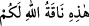

etmiştir sözleri nasıl olur da Allah’ın maksadı olabilir” şeklindeki bir soruya şöyle
cevap vermek mümkündür. Buradaki “lam” âkıbet bildiren lâm’dır. Dolayısıyla ortada
açıklanması güç çelişkili bir durum yoktur.
Âyette yer alan “meselen” “hâzâ” ism-i işâretinden temyiz ya da aynı kelimeden “ona
benzer” anlamında hâl’dir. Bu tıpkı “/o da size bir mûcize olarak Allah’ın
şu devesidir.” (el-A’raf, 7/73) âyet-i kerîmesinde olduğu gibidir. Buna göre âyet-i
kerîmeye mânâ vermek gerekirse verilen misalin uyandırdığı hayret gibi bu sayı ile
Allah neyi murâd etmiştir. Ondokuz sayısına “mesel” denmesi istiâre sanatı yoluyladır.
Burada ondokuz sayısı verilen misale benzetilmiştir. Bilindiği üzere misal dilden dile
dolaşan garip sözlerdir. Ondokuz sayısıda böyle tuhaf bir sayıdır. Çünkü yirmi veya
otuz gibi tam sayılardan değildir.
Âyetteki istifham, ondokuz rakamının Allah katından olduğunu inkârı ifâde eder.
İnkârcıların düşünce tarzına göre eğer ondokuz Allah katından inme olsaydı, böyle eksik
olmazdı.
İnkârcıların “Allah bu sayı ile misal olarak neyi murâd etmiştir?” ifâdeleri düştükleri
fitnenin bir parçası olmakla birlikte sebeb bildirme açısından yalnızca bu söze yer
verilmesi, sözün çirkinlikte ötekilerden ayrı bir yer tuttuğuna işâret etmek içindir.
“İşte böyle Allah dilediğini şaşırtır.” “İşte böyle” şeklinde tercüme edilen “zâlike”
kelimesi daha önce geçen “dalâl/sapıklık” mânâsına işâret etmektedir. Buna göre âyet-i
kerîmeye mânâ vermek gerekirse; Allah Teâlâ Ebû Cehil ve arkadaşları gibi
cehennemin bekçilerini inkâr eden kişilerden saptırmayı dilemiş olduklarını sapıklıkları
içerisinde bırakır. Bu saptırma öncekinden daha aşağı ve daha hafif değildir. Allah
bunu, kulun “ihtiyar”ını Allah’ın hakkı konuşan âyetlerini müşâhede ettiği esnâda
sapıklık yönüne doğru çevirerek yapar. Şunu demek istiyoruz: Kuşkusuz Allah herhangi
bir insanı ancak ezelî dalâletine göre sapıtır. Çünkü dalâletten/sapıklıktan ve kulun
tercihini o yöne doğru çevirmesinden dalâletin sâbit ve değişmez olan varlığının
gereğidir.
Muhammed (a.s.)’ın ashâbı gibi hidâyetini “dilediğini de doğru yola iletir.” Bunların
hidâyeti ise daha önce zikredilen hidâyetin misli gibidir. Bu hidâyet daha önceki
hidâyetten daha aşağı bir derecede olamaz. Bunu da Allah, kul söz konusu âyetleri
müşâhede ettiği esnâda “ihtiyarını/tercihini” hidâyet yönüne doğru çevirmek sûretiyle
sağlar. İşin aslı şudur: Allah herhangi bir kula ezelî hidâyet gereği doğru yolu gösterir.
Çünkü kulun doğru yolu tutması ve tercihini o yöne doğru kullanması kişinin ezelî
hâllerinin gereğidir. Şu hâlde ebedî olan görülen âlemde aksi meydana gelmez.
“Rabbinin ordularını” yukarda zikredilen meleklerin de aralarında bulunduğu
yaratıklarının tümünü “kendisinden başkası bilmez.” Âyette yer alan ve ordular
şeklinde tercüme edilen “cünud” “cünd” kelimesinin çoğuludur. Askerler demektir. Her
topluluk ve her yaratık sınıfı, başlı başına bir “cünûd/ordular”dır. Bir hadis-i şerifte
Peygamber (s.a.) Efendimiz: “Allah’ın orduları vardır, bunlardan birisi de baldır”